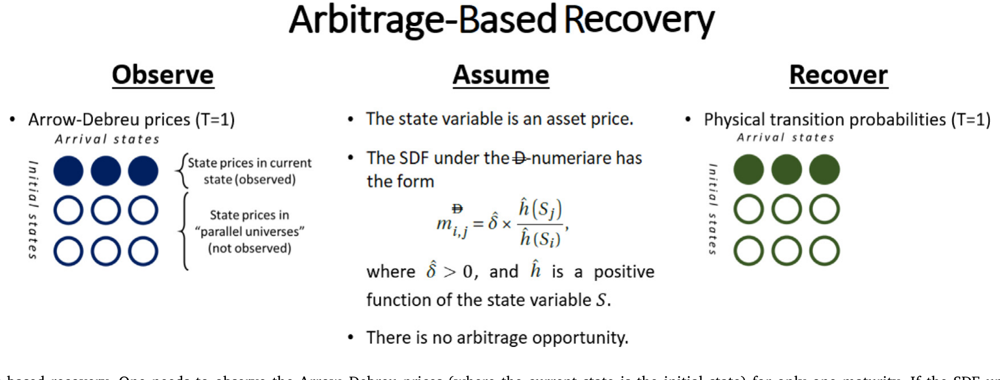
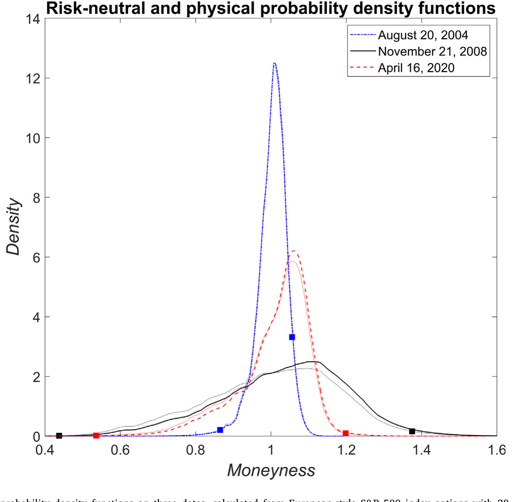
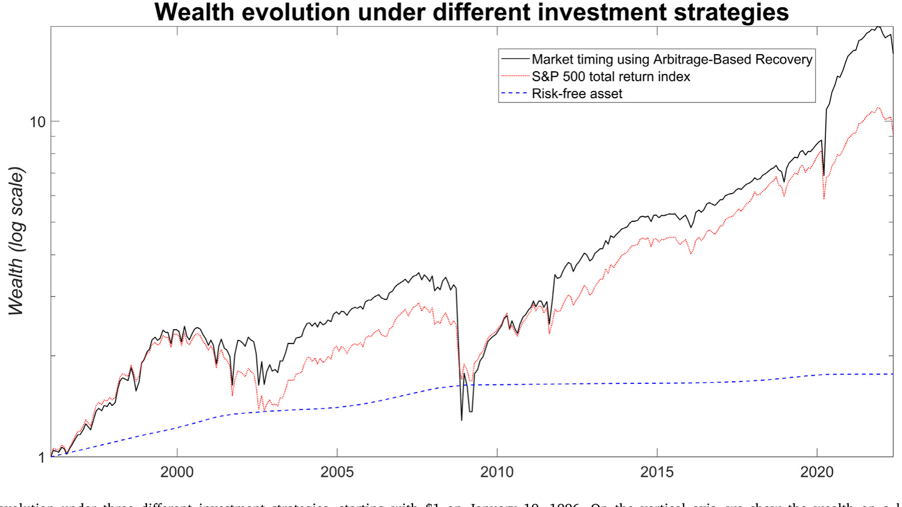
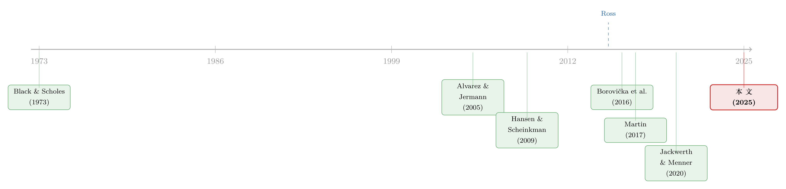

把未来的概率从期权价格里「读」出来：一个被忽略的无套利约束
本文读的是 Horvath (2025, Journal of Financial Economics)：当复原定理 (Recovery Theorem) 所用的状态变量本身就是某个可交易资产的价格时，存在一条此前文献一直忽略的无套利约束。把这条约束加进去，原本看似「灵活」的随机贴现因子瞬间被钉死——它只能是资产毛收益率的倒数。由此，只需观察单一到期的 Arrow–Debreu 价格，就能复原出物理概率；而且用 26 年以上的 S&P 500 期权数据检验，这套复原出来的分布通不过被拒绝，哪怕永久 SDF 成分在数据里波动得很厉害。
1 一个让人心动的梦
做资产定价的人，大概都做过同一个梦：能不能不靠历史数据，而是直接从今天的市场价格里，把未来真实世界的概率读出来？
这个梦之所以诱人，是因为历史数据天然是「向后看」的。我们想知道下个月 S&P 500 跌超过 10% 的真实概率有多大，手里却只有过去几十年的样本——而样本好不好用，全看这几十年到底有多「有代表性」。早在 1952 年，Markowitz 就提醒过：拿历史均值方差去做投资决策，是要打折扣的。于是一个自然的渴望浮现出来：有没有一种「向前看」的、能从实时市场价格里抽取物理概率 (physical probability) 的办法？
期权市场看上去是个完美的候选。期权价格里确实塞满了关于未来的信息。可问题在于——自 Black and Scholes (1973) 和 Merton (1973) 起我们就明白：资产价格本身只取决于风险中性概率 (risk-neutral probability)，而与物理概率无关。你从期权价格里直接抠出来的，是已经被风险溢价「扭曲」过的风险中性分布。想把那层风险溢价剥掉、还原出真实概率，单靠无套利是不够的，你必须额外再假设点什么。
那么——到底该假设什么？
2 Ross 的复原，和它甩不掉的影子
2015 年，Ross 给出了一个漂亮的答案。他的关键假设叫做随机贴现因子的转移独立性 (transition independence)：SDF 可以写成一个常数乘以一个比值，分子是到达状态上某个正函数的取值，分母是初始状态上同一个函数的取值，即
$$m_{i,j} = \delta \times \frac{h(\theta_j)}{h(\theta_i)},$$
这里 \(i\) 是初始状态，\(j\) 是到达状态，\(\theta\) 是状态变量，\(h>0\)。在这个假设下，只要能观察到整个 Arrow–Debreu 价格矩阵，物理概率测度就能被唯一地复原出来。
但「整个矩阵」四个字，正是 Ross 复原定理甩不掉的影子。现实里我们一次只能观察到矩阵的一行——也就是当前状态出发的那一排转移价格。Ross 的补救办法是：观察足够多个到期日的转移价格，把整个矩阵一块块拼出来。麻烦随之而来：要复原一个月度区间的概率，你得观察好几个到期日的转移价格；状态能取多少个值，就得拼多少个到期。如果只用到一年期、按月不重叠，那资产价格就只能取十二个值——网格粗得可怜，复原出来的概率自然也粗糙。
更要命的是，Ross 复原其实偷偷绑了一个隐含假设。早在复原定理出现之前，Alvarez and Jermann (2005) 与 Hansen and Scheinkman (2009) 就证明了：SDF 过程可以分解成一个转移独立的「暂时成分 (transitory component)」和一个鞅「永久成分 (permanent component)」的乘积。Borovička et al. (2016) 一针见血地指出：Ross 的方法只有在鞅成分恒定时，才能复原出真实的物理概率。可「永久成分恒定」这件事，和主流资产定价模型——比如 Bansal and Yaron (2004) 的长期风险模型——是直接冲突的。后来 Bakshi et al. (2018) 用 30 年期国债期货、Qin et al. (2018) 用美国国债数据，都从实证上确认了：永久成分不太可能是常数。Jackwerth and Menner (2020) 更是用 30 多年的 S&P 500 欧式期权做了一次彻底的统计检验，结论很扎心：复原出来的物理分布，生不出实际观测到的 S&P 500 指数值——假设被干脆利落地拒绝了。
换句话说，到 2020 年前后，复原这条线几乎被实证判了「死刑」：理论上要么得观察一大堆到期日，要么得假设一个本身就站不住的恒定鞅成分；实证上检验又过不了关。复原定理像是一个优雅但失灵的梦。
（顺带一提，SDF/定价核怎样在不同市场状态下变形，本身就是个有意思的话题，可参见《定价核的两副面孔：为什么同样跌 10%，在「平静市」里更让人心痛？》。）
3 真正关键的一步：状态变量「恰好是价格」
接着，一个自然的问题是：所有这些麻烦，是不是非有不可？
本文作者的洞察，恰恰藏在一个被几乎所有人当成理所当然、却从未被利用的细节里。Ross 和后来的复原定理都不限定状态变量是什么——只要有期权写在它上面，状态空间可以由任何变量张成。但实证文献里，绝大多数人用的状态变量是价格本身（比如 S&P 500 指数水平）。原因很务实：流动的期权大多写在价格上。
而一旦状态变量就是某个可交易资产的价格，事情就不一样了：这时除了「Arrow–Debreu 价格非负」之外，还有一条额外的无套利约束——那个充当状态的资产，它自己的价格必须满足一条递归的定价关系。这条约束，此前的文献全都没用上。
本文证明：把这条约束加进去，原本被认为「只受转移独立性限制、因而很灵活」的 SDF，其灵活性是假象。复原出来的 SDF 不可能是别的，只能是资产毛收益率的倒数。
这就是全文的「一个核心」：当状态变量是可交易资产的价格时，无套利已经把 SDF 钉死了。剩下要做的，不是去「猜」一个 \(h\) 函数，而是承认 \(h\) 早已被市场结构决定。于是你只需要观察单一到期的一行 Arrow–Debreu 价格，就能复原概率——多个到期、恒定鞅成分这些枷锁，统统不需要。

Figure 1: Arbitrage-based recovery. One needs to observe the Arrow–Debreu prices (where the current state is the initial state) for only one maturity
图 1：套利复原示意图 —— 只需观察「当前状态出发、单一到期」的一行 Arrow–Debreu 价格
4 模型：换一种计价货币，约束就现身了
本文的技术核心，是一次巧妙的计价单位变换 (change of numeraire)。我们一步步来。
第 0 步：设定。 离散时间、完全市场，唯一的状态变量是股价，可取 \(n\) 个值，收进列向量 \(\mathbf{S}\in\mathbb{R}^n_{>0}\)。一期的 Arrow–Debreu 价格矩阵（美元计价）记作 \(\mathbf{A}^{\\)}\in\mathbb{R}^{n\times n}_{>0}$。从状态 \(i\) 到 \(j\) 派发的股息为 \(D_{i,j}\ge 0\)，定义总股息收益率矩阵 (gross dividend yield matrix)
$$F_{i,j} = \frac{D_{i,j}+S_j}{S_j},$$
其中 \(S_j\) 是派息后的状态 \(j\) 股价。注意一个会反复用到的恒等式：\(S_j + D_{i,j} = S_j F_{i,j}\)，也就是「含息总价值」。
第 1 步：定价方程。 Arrow–Debreu 价格可以拆成 SDF 和物理转移概率的逐元素乘积：
$$\mathbf{A}^{\$} = \mathbf{m}^{\$}\odot\boldsymbol{\pi},$$
这里 \(\odot\) 是 Hadamard（逐元素）积，\(\boldsymbol{\pi}\) 是物理转移概率矩阵。复原的全部目的，就是把观测到的 \(\mathbf{A}^{\\)}$ 拆回 \(\mathbf{m}^{\\)}$ 和 \(\boldsymbol{\pi}\)。
第 2 步：引入「股息账户」当新货币。 设一个股息账户，初始值 1 美元，每期按实现的总股息收益率增值：从 \(i\) 到 \(j\) 后，账户值变成 \(1\times F_{i,j}\) 美元。把这个账户的价值当计价单位，定义一种「货币」\(D\)。于是「在状态 \(j\) 收到 1 单位 \(D\)」就等于「在状态 \(j\) 收到 \(F_{i,j}\) 美元」，从而 \(D\) 计价下的 Arrow–Debreu 矩阵是
$$\mathbf{A}^{D} \triangleq \mathbf{A}^{\$}\odot\mathbf{F}.$$
相应地，\(D\) 计价下也有 \(\mathbf{A}^{D}=\mathbf{m}^{D}\odot\boldsymbol{\pi}\)，而两种 SDF 的关系是 \(\mathbf{m}^{D}=\mathbf{m}^{\\)}\odot\mathbf{F}\(。本文沿用 Ross 的转移独立性，但**施加在新货币 \)D$ 上**：\(m^{D}_{i,j}=\hat\delta\,\hat h(S_j)/\hat h(S_i)\)。
第 3 步：那条被忽略的无套利约束。 现在用上「状态变量恰好是可交易资产价格」这件事。今天（状态 \(i\)）的股价，必须等于把未来含息支付按 Arrow–Debreu 价格贴现回来的总和：
$$S_i = \sum_{j} A^{\$}_{i,j}\,(S_j + D_{i,j}) = \sum_{j} A^{\$}_{i,j}\,S_j F_{i,j} = \sum_{j} A^{D}_{i,j}\,S_j.$$
写成矩阵形式，这就是惊人简洁的一句话：
$$\mathbf{A}^{D}\,\mathbf{S} = \mathbf{S}.$$
也就是说，\(\mathbf{S}\) 是 \(\mathbf{A}^{D}\) 的特征向量，对应的特征值是 1。这正是此前文献漏掉的那条约束——它本来一直在那儿，只是没人意识到它能拿来用。
第 4 步：Perron–Frobenius 登场。 \(\mathbf{A}^{D}\) 是正方阵，\(\mathbf{S}\) 是正向量。由 Perron–Frobenius 定理，正特征向量唯一（相差一个正的尺度因子），它对应的就是 Perron–Frobenius 特征值。于是 Lemma 1 顺理成章：无套利 \(\Rightarrow\) \(\mathbf{A}^{D}\) 的 Perron–Frobenius 特征向量是 \(\mathbf{S}\)、特征值是 \(1\)。换句话说，复原问题里那个本来要去「解」的特征值–特征向量，早就被无套利白送给你了。
第 5 步：复原公式。 借用 Martin and Ross (2019) 的分解逻辑（Theorem 1）：任何正方阵 \(\mathbf{A}\) 都能唯一分解成 \(\mathbf{A}=\phi\,\mathbf{Z}\,\boldsymbol{\Pi}\,\mathbf{Z}^{-1}\)，其中 \(\mathbf{Z}\) 是正对角阵、\(\phi\) 是 Perron–Frobenius 特征值、\(\boldsymbol{\Pi}\) 是行随机矩阵（即物理转移概率）。对 \(\mathbf{A}^{D}\) 而言，我们刚证出 \(\phi=1\)、\(\mathbf{Z}=\mathrm{diag}(\mathbf{S})\)。代进去：
$$\Pi_{i,j} = \frac{1}{\phi}\big(\mathbf{Z}^{-1}\mathbf{A}^{D}\mathbf{Z}\big)_{i,j} = \frac{1}{S_i}\,A^{D}_{i,j}\,S_j = A^{\$}_{i,j}\times\frac{S_j\,F_{i,j}}{S_i}.$$
这就是本文的主定理（Theorem 2，Arbitrage-Based Recovery）。把它的每一块拆开看：
整条公式右边的量全都可观测：\(A^{\\)}_{i,j}$ 来自当前一行期权价格，\(S_j\)、\(F_{i,j}\)、\(S_i\) 来自价格与股息。没有任何需要去「拼多个到期」或「假设恒定鞅成分」的地方。
5 反转：所谓「灵活的 SDF」是假象
到这里，真正的反转出现了。
我们把复原出的概率反代回去，看看 \(D\) 计价下的 SDF 长什么样：
$$m^{D}_{i,j} = \frac{A^{D}_{i,j}}{\Pi_{i,j}} = \frac{A^{D}_{i,j}}{A^{D}_{i,j}\,S_j/S_i} = \frac{S_i}{S_j}.$$
复原出来的 SDF，恰好是资产毛价格收益率的倒数。 对照转移独立形式 \(m^{D}_{i,j}=\hat\delta\,\hat h(S_j)/\hat h(S_i)\)，等于是说 \(\hat h(S)\propto 1/S\)、\(\hat\delta=1\)——那个本来号称「只受转移独立性约束、可以很灵活」的 \(\hat h\) 函数，根本没有任何自由度可言。
这正是本文对既有文献最锋利的一击：大家以为自己在「灵活地」提取一个仅受转移独立性限制的 SDF，但只要状态变量是可交易资产的价格，无套利就已经把这个 SDF 完全钉死了。所谓的灵活性，是 spurious 的。
而且，这个结果直接落在 SDF 的长期分解上：只要状态空间由一个有界闭的价格过程张成，在新计价单位下，SDF 的暂时成分就等于该资产已实现毛收益率的倒数。当状态变量换成股价–股息比 (price–dividend ratio) 时，换另一种计价单位，同样的结论依然成立。
6 顺便，和 Martin (2017) 握了个手
这套框架还顺手解释了另一条看似无关的文献。Martin (2017) 证明：只要满足所谓的「负相关条件 (negative correlation condition)」，就能用期权价格在实时给出市场预期收益的一个下界，而且实证上这个下界相当「紧」。
本文指出：Martin 的负相关条件，其实就是「股息账户计价单位下 SDF 的鞅成分，与美元计价下的市场总收益负相关」这一条件的另一种说法。更进一步，本文复原出的物理概率，所隐含的市场预期收益恰好等于 Martin 的下界。两条看似平行的研究，原来在同一个计价单位变换下重合了。
（关于「价格里到底藏了多少前瞻信息」，期权市场的信息含量本身也很有意思，可参见《期权里藏着的，不是先知，而是一张借券账单》。）
7 数据与实证：它真的过关了吗？
理论再漂亮，也得回到 Jackwerth and Menner (2020) 当年那块试金石上：实际实现的收益，到底是不是从复原分布里抽出来的？
本文用了 26 年以上的 S&P 500 指数期权数据（图 9 的财富序列从 1996 年 1 月 19 日起步），到期日 28 天的欧式期权，做了若干密度检验 (density test) 与均值预测检验 (mean prediction test)。先把风险中性密度从期权隐含波动率曲线里拟合出来（左右尾部的处理见原文附录 A），再套用 Theorem 2 的公式，得到 1 个月、非年化总收益的物理分布。

Figure 4: Risk-neutral and physical probability density functions on three dates, calculated from European-style S&P 500 index options with 28 days to
图 4：风险中性与物理概率密度 —— 三个交易日上，由 28 天期 S&P 500 期权算出的两条分布
结论很干脆：用本文的套利复原，「实现收益来自复原分布」这一假设无法被拒绝；而用 Jackwerth and Menner (2020) 测试过的其它复原方法，同样的假设被自信地拒绝。一个失灵多年的梦，换了一条无套利约束，竟然过关了。

Figure 9: Wealth evolution under three different investment strategies, starting with $1 on January 19, 1996. On the vertical axis, we show the wealth
图 9：三种投资策略下的财富演化 —— 从 1996 年起的 1 美元
8 那「永久成分很波动」怎么办？
这里有个看上去要命的反对意见：前面 Bakshi et al. (2018)、Qin et al. (2018) 不是已经证明 SDF 的永久成分很波动、绝非常数吗？而 Borovička et al. (2016) 又说，复原要成立就得鞅成分恒定。本文怎么能既承认永久成分波动、又宣称复原成功？
本文在第 8 节里给出的调和，相当精巧：实证里那些复原所施加的限制（比如「一个有界闭的价格过程张成了状态空间」）本身，就意味着这套框架下的「暂时 SDF 成分」极不可能等于真实的暂时成分。也正因如此，真实的永久成分在数据里波动得厉害（本文第 8.1 节也确认了这一点），并不和套利复原的实证成功相矛盾——它们量的根本不是同一个东西。换言之，过去的「证伪」与本文的「成功」之间，没有真正的冲突，只是大家对「永久/暂时成分」的口径不同。
9 文献脉络
把这条线捋一捋，会看到一个相当清晰的演进。
最早的地基，是 Black and Scholes (1973) 和 Merton (1973)：资产价格只取决于风险中性概率，物理概率无法单凭无套利读出。接着，Alvarez and Jermann (2005) 与 Hansen and Scheinkman (2009) 把 SDF 分解成暂时成分与永久（鞅）成分，为后来的一切讨论搭好了语言。然后，Ross (2015) 抛出复原定理，用转移独立性把物理概率「复原」了出来，掀起一场热烈的争论。
但真正关键的转折，是 Borovička et al. (2016)：他们指出 Ross 复原暗含「鞅成分恒定」，而这与长期风险模型等主流框架冲突；随后 Bakshi et al. (2018)、Qin et al. (2018) 从实证上确认永久成分并非常数，Jackwerth and Menner (2020) 则用统计检验把 Ross 复原的实证表现彻底否掉。与此同时，Martin (2017) 从另一个方向给出了市场预期收益的实时下界。

于是反转出现在 2025 年：本文不再去和「鞅成分恒定」较劲，而是回到一个最朴素的事实——状态变量恰好是可交易资产的价格，这本身就附带一条无套利约束。把它用上，复原所需的信息从「多个到期的整张矩阵」坍缩成「单一到期的一行」，而且过得了 Jackwerth and Menner 那道检验。它处在这条脉络的「下一个合乎逻辑的台阶」上。
10 评论与延伸（Q&A + 研究方向）
(a) 几个可能的疑问
Q：这跟 Ross (2015) 到底差在哪？一句话说清。
Ross 需要观察多个到期去拼出整张 Arrow–Debreu 矩阵，并隐含假设鞅成分恒定；本文只需观察单一到期的一行，因为「状态变量是可交易资产价格」附带的无套利约束 \(\mathbf{A}^D\mathbf{S}=\mathbf{S}\) 直接把 Perron–Frobenius 特征值/向量送给了你。
Q：既然 SDF 被钉死成毛收益率的倒数，那「复原」还剩下什么内容？是不是同义反复？
不是。被钉死的是 \(D\) 计价下的暂时 SDF 成分；真正被复原、有信息量的是物理转移概率 \(\Pi_{i,j}\)。公式右边的 \(A^{\\)}_{i,j}$ 仍来自期权价格，承载着市场对未来分布的看法。钉死 SDF 只是消除了「该用哪个 \(h\) 函数」的任意性，让概率变得可识别。
Q：把状态变量限定成「可交易资产价格」，是不是把适用范围砍得太狠？
是个真实的代价。本文的无套利约束只在状态变量是可交易资产价格（且做了恰当计价单位变换）时才成立。如果状态变量是利率、波动率、天气这类非价格变量，这条额外约束就没有了，Ross 那套的麻烦依旧。好在实证上流动的指数期权恰恰都写在价格上，所以这个限定在 S&P 500 这种主战场反而不太碍事。
Q：永久成分明明很波动，复原却成功，这不自相矛盾吗？
关键在于「暂时/永久成分」的口径。本文复原所依赖的暂时成分（毛收益率倒数）几乎肯定不等于真实 SDF 的暂时成分，所以真实永久成分波动得再厉害，也不和本文的实证成功冲突——两者根本不是同一个分解。
Q：股息那块会不会埋着隐患？
本文实证假设期权到期前（未来 28 天）要派的股息在观察时已知，并援引 Chetty et al. (2005)：公司通常在派息前四到六周宣布股息，所以这个假设算合理。但毕竟期权写在派息后价格上，股息结构的设定（\(F\) 矩阵的具体形式）是个需要小心的建模环节，换一种股息再投资约定，结果会受影响。
Q：它和 Martin (2017) 的下界是「重合」还是「等价」？
本文复原出的物理概率所隐含的市场预期收益，恰好等于 Martin 的下界，且 Martin 的负相关条件被重新诠释为「股息账户计价下 SDF 鞅成分与市场总收益负相关」。可以理解为：在「价格张成状态空间」这一前提下，两条路通向同一个数。
(b) 几个可能的研究问题与提案
1. 把套利复原搬到公司债/信用市场。
【经济故事】信用利差里同样混着违约的物理概率与风险溢价，分离二者是信用研究的核心难题。若能找到一个「可交易、且其价格张成状态空间」的信用标的（如某指数的 CDS 或债券 ETF），或许能照搬本文的计价单位变换，复原出前瞻的违约/回收物理分布。 【可行性】中。难点在于信用市场期权稀薄、Arrow–Debreu 价格难以干净地从市场读出；需要 CDX/iTraxx 期权或债券 ETF 期权数据，识别上要先论证状态空间确由该价格张成。doable 但门槛比指数期权高。
2. 用复原出的物理分布做外资持有人冲击的事件研究。
【经济故事】当外资大额进出某市场时，物理概率（尤其尾部）应当随之变化。复原方法给了一个实时、逐日的物理分布序列，可以围绕外资流向冲击做事件研究，看尾部风险如何被重定价。 【可行性】中。需要高频期权面（复原分布）+ 外资流向数据（如 TIC、基金持仓）。识别靠流向的外生冲击（指数重平衡、被动资金）；分布端 doable，外生性论证是主要挑战。
3. 复原分布 vs. 历史估计，谁更能预测尾部事件？
【经济故事】本文宣称复原分布「向前看」、优于「向后看」的历史估计。一个直接的横向比拼：用复原出的 1 个月物理分布预测未来实现的极端跌幅，和滚动历史分布、GARCH 类模型 PK，看谁的尾部校准更好。 【可行性】高。只需 S&P 500 期权 + 实现收益，复原公式已给定，检验是标准的密度校准/PIT 检验。几乎是本文实证的自然延伸。
4. 把状态变量换成价格–股息比，检验稳健性与含义差异。
【经济故事】本文证明用 price–dividend ratio 当状态变量、换另一种计价单位，结论依然成立。但 P/D 比承载的是估值/贴现率信息，复原出的分布可能在中长期视野下与「以价格为状态」显著不同。 【可行性】高。数据与方法都已具备，只是把状态变量替换并重做实证，是一篇干净的对照研究。
11 我的判断
先说贡献。本文最漂亮的地方，是把一件「大家天天用却从没拿来用」的事实——状态变量恰好是可交易资产价格——转化成一条硬的无套利约束 \(\mathbf{A}^D\mathbf{S}=\mathbf{S}\)，再借 Perron–Frobenius 把复原问题从「拼多个到期」坍缩成「读单一到期一行」。它既在理论上澄清了「SDF 灵活性是假象」，又在实证上让一个被判死刑的方法重新过关，还顺手与 Martin (2017) 的下界、与 SDF 长期分解握了手。这种「一个洞察打通三处」的整洁感，是好理论的标志。
再说对识别的担忧。其一，整套结论严重依赖「状态变量是可交易资产价格」这个前提，一旦状态变量非价格，额外约束消失，本文的优势也随之消失——它解的是一类特殊（但实证上最常见）的问题，而非 Ross 问题的一般化。其二，风险中性密度的尾部是拟合出来的（附录 A 的左右尾处理），而复原结论恰恰最看重尾部，密度检验「不被拒绝」也可能部分来自尾部设定的自由度，这点值得用不同尾部方法做更激进的稳健性检验。其三，「永久成分波动不矛盾」的调和虽自洽，但也意味着本文复原的暂时成分几乎肯定不是真实暂时成分——读者要清楚：它复原的是「在该框架口径下的物理概率」，而非无争议的「真实世界概率」。
最后说想看到什么。我最想看的是跨市场、跨标的的外部检验：把同一套公式搬到个股、行业指数、乃至信用标的上，看「单一到期复原」的优势是否稳健地复现；以及一个真正 out-of-sample 的尾部预测竞赛——让复原分布去和 GARCH、历史模拟、Martin 下界正面 PK 预测下个月的极端跌幅。如果在这些更严苛的擂台上它依然站得住，那这条「被忽略的无套利约束」就不只是优雅，而是真有用。
参考文献
- Alvarez, F., Jermann, U.J. (2005). Using asset prices to measure the persistence of the marginal utility of wealth. Econometrica 73(6), 1977–2016.
- Bakshi, G., Chabi-Yo, F., Gao, X. (2018). A recovery that we can trust? Deducing and testing the restrictions of the recovery theorem. Review of Financial Studies 31(2), 532–555.
- Bansal, R., Yaron, A. (2004). Risks for the long run: A potential resolution of asset pricing puzzles. Journal of Finance 59(4), 1481–1509.
- Black, F., Scholes, M. (1973). The pricing of options and corporate liabilities. Journal of Political Economy 81(3), 637–654.
- Borovička, J., Hansen, L.P., Scheinkman, J.A. (2016). Misspecified recovery. Journal of Finance 71(6), 2493–2544.
- Hansen, L.P., Scheinkman, J.A. (2009). Long-term risk: An operator approach. Econometrica 77(1), 177–234.
- Horvath, F. (2025). Arbitrage-based recovery. Journal of Financial Economics 163, 103969.
- Jackwerth, J.C., Menner, M. (2020). Does the Ross recovery theorem work empirically? Journal of Financial Economics 137(3), 723–739.
- Jensen, C.S., Lando, D., Pedersen, L.H. (2019). Generalized recovery. Journal of Financial Economics 133(1), 154–174.
- Markowitz, H. (1952). Portfolio selection. Journal of Finance 7(1), 77–91.
- Martin, I. (2017). What is the expected return on the market? Quarterly Journal of Economics 132(1), 367–433.
- Martin, I., Ross, S. (2019). Notes on the yield curve. Journal of Financial Economics 134(3), 689–702.
- Merton, R.C. (1973). Theory of rational option pricing. Bell Journal of Economics and Management Science 4(1), 141–183.
- Qin, L., Linetsky, V., Nie, Y. (2018). Long-term factorization of affine pricing kernels. Mathematical Finance (forthcoming/working).
- Ross, S. (2015). The recovery theorem. Journal of Finance 70(2), 615–648.